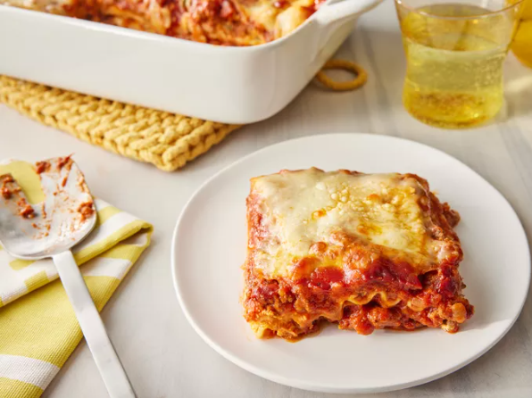

lasagna

¡Esta receta de lasaña requiere un poco de trabajo, pero es tan satisfactoria y abundante que vale la pena!
Ingredientes
- 1 libra de salchicha italiana dulce
- ¾ libra de carne molida magra
- ½ taza de cebolla picada
- 2 dientes de ajo machacados
- 1 lata (28 onzas) de tomates triturados
- 2 latas (6,5 onzas) de salsa de tomate enlatada
- 2 latas (6 onzas) de pasta de tomate
- ½ taza de agua
- 2 cucharadas de azúcar blanca
- 4 cucharadas de perejil fresco picado, divididas
- 1 ½ cucharadita de hojas secas de albahaca
- 1 ½ cucharadita de sal, dividida, o al gusto
- 1 cucharadita de condimento italiano
- ½ cucharadita de semillas de hinojo
- ¼ de cucharadita de pimienta negra molida
- 12 fideos de lasaña
- 16 onzas de queso ricotta
- 1 huevo
- ¾ libra de queso mozzarella, cortado en rodajas
- ¾ taza de queso parmesano rallado
Pasos
- Reúne todos los ingredientes.
- Cocine la salchicha, la carne molida, la cebolla y el ajo en un horno holandés a fuego medio hasta que estén bien dorados.
- Incorpore los tomates triturados, la salsa de tomate, la pasta de tomate y el agua. Sazone con azúcar, 2 cucharadas de perejil, albahaca, 1 cucharadita de sal, condimento italiano, semillas de hinojo y pimienta. Cocine a fuego lento, tapado, durante aproximadamente 1 hora y media, revolviendo de vez en cuando.
- Ponga a hervir una olla grande con agua ligeramente salada. Cocine los fideos de lasaña en agua hirviendo durante 8 a 10 minutos. Escurra los fideos y enjuáguelos con agua fría.
- En un tazón, combine el queso ricotta con el huevo, las 2 cucharadas restantes de perejil y 1/2 cucharadita de sal.
- Precaliente el horno a 375 grados F (190 grados C).
- Para armar, esparce 1 ½ tazas de salsa de carne en el fondo de una fuente para horno de 9x13 pulgadas. Coloca 6 fideos a lo largo sobre la salsa de carne, superponiéndolos ligeramente. Unta con la mitad de la mezcla de queso ricotta. Cubre con 1/3 de las lonchas de queso mozzarella. Coloca con una cuchara 1 ½ tazas de salsa de carne sobre la mozzarella y espolvorea con 1/4 taza de queso parmesano.
- Repita las capas y cubra con el resto del queso mozzarella y parmesano. Cubra con papel de aluminio: para evitar que se pegue, rocíe el papel de aluminio con aceite en aerosol o asegúrese de que el papel de aluminio no toque el queso.
- Hornear en el horno precalentado durante 25 minutos. Retirar el papel aluminio y hornear durante 25 minutos más.
- Deje reposar la lasaña durante 15 minutos antes de servir.
otras recetas